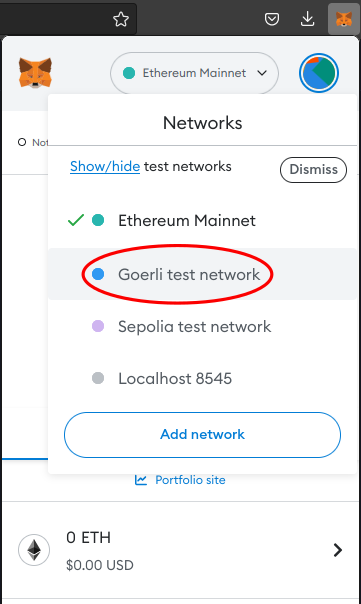

Introduction
This guide is an introduction to Ethereum smart contract development. It was created by Saravanan Vijayakumaran for the participants of the 2022 ACM Winter School on Digital Trust organized by IITB Trust Lab.
Prerequisites
Ethereum Testnets
Ethereum smart contracts are programs that are installed on the Ethereum blockchain. Installing a smart contract is also called deployment. Deploying smart contracts on Ethereum costs ether. The amount of ether required depends on the size of the smart contract.
Using real ether for learning smart contract development is not feasible. Fortunately, the Ethereum ecosystem operates testnets. These are versions of the Ethereum blockchain that are used for testing purposes. The main Ethereum blockchain is called mainnet. Unlike mainnet ether, testnet ether has no value. It is available for free from websites called faucets.
In this guide, we will be using the Goerli testnet (https://goerli.etherscan.io/) for Ethereum smart contract development. The domain name in the previous URL corresponds to Etherscan, a blockchain explorer which allows users to explore blockchain data in a browser. The blocks on Ethereum mainnet can be explored at https://etherscan.io/.
Node Providers
To deploy contracts to Ethereum, we need access to an Ethereum node. The node software continually downloads blocks and tracks the tip of the Ethereum blockchain. While it is possible to run an Ethereum node on our own computers, it will consume bandwidth, disk space, and CPU cycles.
It is more convenient to connect to a remote node operated by a node provider like Alchemy, Infura, or QuickNode. These are Infrastructure-as-a-Service (IaaS) companies that offer access to Ethereum nodes for a fee. All of them offer a free tier account that is sufficient for learning purposes.
See this article for more information about node providers: Alchemy Blog: What is a Blockchain Node Provider
Prerequisites for Smart Contract Development
Before beginning smart contract development, you need to complete the following steps:
- Install an Ethereum wallet and create an address to store testnet ether
- Request testnet ether from a faucet into your address
- Create an account with a node provider and generate an API key
The details of how to complete these steps are described in the next sections. Keep reading!
Note: In this guide, we will be using two different workflows for smart contract development. One will use the Remix online IDE and the other will use Hardhat.
The Remix workflow does not require a node provider API key (step 3 in the above list can be skipped). Remix will use the node provider of the Metamask wallet (which is installed as a browser plugin). The Hardhat workflow does require the API key.
While the Remix workflow is easier to setup, the Hardhat workflow is more convenient for testing and deploying smart contracts.
Install Metamask
Metamask is an Ethereum wallet that can be installed as a browswer plugin. Go to https://metamask.io/download/ and install it for your browser.
-
Once you install the Metamask extension, you should see an orange fox icon in your browser's extension list. Click on it to get started with setting up your wallet.
-
You should eventually arrive at the following screen
-
Click on "Create a wallet" and set a password.
-
The Secret Recovery Phrase (SRP) is the seed randomness from which all your private keys will be created. Metamask will show you the SRP for your new wallet.
- Make sure you save your SRP by writing it down or downloading it.
- If you lose it, you will lose access to all the Ethereum accounts you create in Metamask.
-
Metamask will show you the words in your SRP and ask you to choose them in the right order. This is to confirm that you have stored the SRP.
-
Once your SRP is confirmed, Metamask will show you the wallet screen with a new created Ethereum account. This account will have no founds. We will fund it in the next section.
-
You can copy your Metamask address by following the step described in this page.
Get Testnet Ether
For the lab exercises described in this guide, you need to have testnet ether in your wallet. You will get testnet ether from faucet websites. To view your testnet ether balances, you need to add a testnet configuration to Metamask.
Configuring Goerli Testnet in Metamask
By default, the Metamask wallet displays account balances on Ethereum mainnet. This is indicated at the top of the Metamask interface.
You will be configuring Metamask to interact with the Goerli tesnet. Do the following steps:
-
Open Metamask and click on the dropdown labelled Ethereum mainnet. Click the Show/hide test networks link.
-
Set the Show test networks button to ON.
-
The network dropdown menu should now show the Goerli test network

-
Choose the Goerli test network from the dropdown. Metamask should now denominate your balance in GoerliETH.
Requesting Goerli Tesnet Ether From Faucets
Faucets are websites that send small amounts of testnet ether on request. They are called faucets because they drip ether. The faucet operators themselves acquire the testnet ether by participating in the testnet consensus protocol.
-
Click on the account name in Metmask to copy the address to your clipboard.. To request testnet ether, you have to paste your account address in the faucet website.
-
To prevent bots or malicious users from draining all the testnet ether available, faucets have mechanisms for rate-limiting requests. Here are some faucets along with their rate-limiting mechanisms. Go to one of them.
- Paradigm Faucet: https://faucet.paradigm.xyz/
- Requires a Twitter account that must have at least 1 Tweet, 50 followers, and be older than 1 month. You need to authorize this faucet to read your Twitter profile, to check the previous conditions hold.
- Drips 0.1 ETH per user every 24 hours.
- Alchemy Faucet: https://goerlifaucet.com/
- Requires a free Alchemy account. The faucet will check that you are logged in.
- Drips 0.2 ETH per user every 24 hours.
- Paradigm Faucet: https://faucet.paradigm.xyz/
-
Paste the account address into the textbox of the faucet and request the testnet ether. The picture below shows the Alchemy faucet interface.
-
If the faucet's ether transfer succeeds, you should see a non-zero GoerliETH balance in Metamask.
Get Node Provider API Key
NOTE: Node provider API key is required only for the lab exercises based on Hardhat.
We will using Alchemy as our node provider. To generate an Alchemy API key, do the following:
-
Create a free account on Alchemy.
-
Login into Alchemy.
-
Create a new app by choosing the option on the Apps dropdown menu.
-
Choose Goerli in the NETWORK dropdown of the Create App page.
-
Click the Create app button. Your new Alchemy app should appear in the list of Apps at https://dashboard.alchemy.com/apps.
-
Click on the VIEW KEY button to get the API key.
Remix Workflow
Remix is an IDE for Ethereum smart contract development that can run in a browser. It is available at https://remix.ethereum.org. The Remix documentation is available at https://remix-ide.readthedocs.io/.
The layout of the Remix IDE is described at https://remix-ide.readthedocs.io/en/latest/layout.html. Read this page. We will be using the components described on that page in the rest of this chapter.
Compiling a Contract
Do the following in the Remix IDE:
- Create a new blank workspace using the File Explorer.
- Create a new file and name it Storage.sol.
- Copy the below code and paste it into Storage.sol. This code is from the Solidity tutorial.
// SPDX-License-Identifier: GPL-3.0 pragma solidity >=0.4.16 <0.9.0; contract SimpleStorage { uint storedData; function set(uint x) public { storedData = x; } function get() public view returns (uint) { return storedData; } } - Click on the Solidity compiler icon and click on the Compile Storage.sol to compile the contract.
- Introduce a bug in Storage.sol by changing the line
uint storeData;touint store;. Click the Compile Storage.sol button again and check that errors are reported. - Undo the bug and continue with the next section.
Deploying a Contract
Do the following in the Remix IDE:
-
Click on the Deploy & run transactions icon.
-
In the ENVIRONMENT dropdown, choose Injected Provider - Metamask.
-
A Metamask window will popup asking you to select the account you wish to connect to Remix. Choose the appropriate account and click Next followed by Connect. At this point, the ACCOUNT field in Remix will be populated by your account address from Metamask.
-
Click the Deploy button. A Metamask window will popup asking you to confirm the contract deployment.
-
Click the Confirm button. After a few seconds, the contract will be deployed. You will see a notification in the Remix terminal. The contract will also appear in the Deployed Contracts list in the Remix Side Panel.
Interacting with the Contract
Do the following in the Remix IDE:
-
Go to the Deployed Contracts section of the Remix Side Panel.
-
In the section corresponding to SimpleStorage, you should see two buttons labeled set and get.
-
Click the get button. It should return the value 0. The string uint256: 0 will appear below the get button.
-
Enter an integer value (say 32) into the input box next to the set button and click it.
-
A Metamask window will popup asking you to confirm the set transaction. Click the Confirm button.
-
You will see a notification in the Remix terminal that the transaction is pending. After a few seconds, there will be another notification in the Remix terminal that the transaction was included in a block.
-
Click the get button. It should return the value 32. The string uint256: 32 will appear below the get button.
Hardhat Workflow
Hardhat is a development environment for Ethereum smart contract development. It has a rich ecosystem of tools and plugins which have made it a popular choice among developers. The Hardhat documentation can be found at https://hardhat.org/docs.
NOTE: The contents on this chapter are based on the Hello World smart contract tutorial by Alchemy.
Setting up a Hardhat Project
To setup a project that uses Hardhat for Ethereum contract development, do the following:
- Install a recent version of Node.js. We need the
npmandnpxcommands for the rest of this chapter. - Create a new directory and enter it.
mkdir hello-world cd hello-world - Initialize a new Node.js project.
The directory should contain a single file callednpm init -ypackage.json. - Install Hardhat by running the following command in the
hello-worlddirectory.
Thenpm install --save-dev hardhatpackage.jsonfile will now have ahardhatsection underdevDependencies. - Create a Hardhat project by running the following command. Choose the Create an empty hardhat.config.js option.
The directory will have a file callednpx hardhathardhat.config.jswith the following contents.
The number/** @type import('hardhat/config').HardhatUserConfig */ module.exports = { solidity: "0.8.17", };0.8.17specifies the version of the Solidity compiler.
Compiling a Contract
To add a contract and compile it using Hardhat, do the following:
-
In the project directory, create a
contractsdirectory.mkdir contracts -
Create a new file in the
contractsdirectory calledHelloWorld.sol. -
Copy and paste the following code into
HelloWorld.sol.// SPDX-License-Identifier: MIT pragma solidity >=0.7.3; // Defines a contract named `HelloWorld`. contract HelloWorld { // Event emitted when update function is called event UpdatedMessages(string oldStr, string newStr); // Declares a state variable `message` of type `string`. string public message; // A constructor is a special function that is only executed upon contract creation. constructor(string memory initMessage) { message = initMessage; } // A public function that accepts a string argument and updates the `message` storage variable. function update(string memory newMessage) public { string memory oldMsg = message; message = newMessage; emit UpdatedMessages(oldMsg, newMessage); } } -
Compile the contract by running the following command.
npx hardhat compileYou should see a message saying
Compiled 1 Solidity file successfully.The command also creates a directory called
artifactsthat has some JSON files. TheHelloWorld.jsonhas the contract's code and application binary interface (ABI). These will be used for contract deployment and interaction.
Deploying a Contract
To deploy the HelloWorld.sol contract, do the following:
-
Install the dotenv package in your project directory.
npm install dotenv --save -
Create a file called
.envin the project directory with the following contents.API_URL = "https://eth-goerli.g.alchemy.com/v2/your-api-key" PRIVATE_KEY = "your-metamask-private-key"Follow these instructions to export your private key from Metamask. The
API_URLneeds to be copied from your Alchemy account.NOTE: If you are going to push the project code to a public Github/Gitlab repository, remember to add the
.envfile to your.gitignore. -
Install Ethers.js by running the following command
npm install --save-dev @nomiclabs/hardhat-ethers "ethers@^5.0.0" -
Update the
hardhat.config.jsfile to have the following content./** * @type import('hardhat/config').HardhatUserConfig */ require('dotenv').config(); require("@nomiclabs/hardhat-ethers"); const { API_URL, PRIVATE_KEY } = process.env; module.exports = { solidity: "0.8.17", defaultNetwork: "goerli", networks: { hardhat: {}, goerli: { url: API_URL, accounts: [`0x${PRIVATE_KEY}`] } }, } -
Create a directory called
scriptsmkdir scripts -
Create a file called
deploy.jsin thescriptsdirectory with the following content.async function main() { const HelloWorld = await ethers.getContractFactory("HelloWorld"); // Start deployment, returning a promise that resolves to a contract object const hello_world = await HelloWorld.deploy("Hello World!"); console.log("Contract deployed to address:", hello_world.address); } main() .then(() => process.exit(0)) .catch(error => { console.error(error); process.exit(1); }); -
Deploy the contract by running the following command.
npx hardhat run scripts/deploy.js --network goerliYou should see a message of the following form. The address will be different in your case.
Contract deployed to address: 0xD1aEf927a80301b63dE477afe2410F25bf8Baf6aSave the contract address somewhere. It will be used in the next section.
Interacting with the Contract
In this section, we will interact with the HelloWorld contract that deployed in the previous section. Do the following:
-
Add
API_KEYandCONTRACT_ADDRESSvariables to the.envfile. Your.envfile should look like the following:API_URL = "https://eth-goerli.g.alchemy.com/v2/<your-api-key>" API_KEY = "<your-api-key>" PRIVATE_KEY = "<your-metamask-private-key>" CONTRACT_ADDRESS = "0x<your contract address>"Note that the
API_KEYis the string at the end of yourAPI_URL. TheCONTRACT_ADDRESSis the address that was output at the end of the deployment workflow in the previous section. -
Create a file called
interact.jsin thescriptsdirectory with the following content.const API_KEY = process.env.API_KEY; const PRIVATE_KEY = process.env.PRIVATE_KEY; const CONTRACT_ADDRESS = process.env.CONTRACT_ADDRESS; const contract = require("../artifacts/contracts/HelloWorld.sol/HelloWorld.json"); // provider - Alchemy const alchemyProvider = new ethers.providers.AlchemyProvider(network="goerli", API_KEY); // signer - your account const signer = new ethers.Wallet(PRIVATE_KEY, alchemyProvider); // contract instance const helloWorldContract = new ethers.Contract(CONTRACT_ADDRESS, contract.abi, signer); async function main() { const message = await helloWorldContract.message(); console.log("The message is: " + message); console.log("Updating the message..."); const tx = await helloWorldContract.update("Hello Again World!"); await tx.wait(); const newMessage = await helloWorldContract.message(); console.log("The new message is: " + newMessage); } main(); -
Run the following command to update the message in the
HelloWorldcontract.npx hardhat run scripts/interact.js --network goerliYou should see the following output after about half a minute. The delay is because the script waits for the transaction included in a new block in the Goerli testnet.
The message is: Hello World! Updating the message... The new message is: Hello Again World! -
The
interact.jsscript above requires you to enter the message in the script itself. It would be nice if we could specify the message on the command line. This can be done by using Hardhat as a library in a standalone Node.js script. Create a new file calledinteract-cli.jsin thescriptsdirectory with the following content.const hre = require("hardhat"); const API_KEY = process.env.API_KEY; const PRIVATE_KEY = process.env.PRIVATE_KEY; const CONTRACT_ADDRESS = process.env.CONTRACT_ADDRESS; const contract = require("../artifacts/contracts/HelloWorld.sol/HelloWorld.json"); // provider - Alchemy const alchemyProvider = new hre.ethers.providers.AlchemyProvider(network="goerli", API_KEY); // signer - your account const signer = new hre.ethers.Wallet(PRIVATE_KEY, alchemyProvider); // contract instance const helloWorldContract = new hre.ethers.Contract(CONTRACT_ADDRESS, contract.abi, signer); async function main() { await hre.run("compile"); const args = process.argv; if (args.length != 3) { console.log("Provide a message argument (in single quotes)") process.exit(0); } const new_message_arg = args[2]; const message = await helloWorldContract.message(); console.log("The message is: " + message); console.log("Updating the message..."); const tx = await helloWorldContract.update(new_message_arg); await tx.wait(); const newMessage = await helloWorldContract.message(); console.log("The new message is: " + newMessage); } main().catch((error) => { console.error(error); process.exitCode = 1; }); -
Run the following command to update the message stored in the
HelloWorldcontract from the command line. Note the single quotes surrounding the new message.node scripts/interact-cli.js 'Hello World 3!'You should see the following output:
Nothing to compile The message is: Hello World Again! Updating the message... The new message is: Hello World 3!
ERC-20 Token
The ERC-20 token standard is a specification for fungible tokens on Ethereum. A token is said to be fungible if one unit of the token can be replaced with any other unit.
For example, a 10 rupee note is fungible in the sense it can be exchanged for any other 10 rupee note. Ether is itself a fungible token. Each unit of a non-fungible token (NFTs) has a unique identifier and cannot be exchanged for another unit.
NOTE: The ERC in ERC-20 stands for Ethereum Request for Comments. They are Ethereum's analog of Request for Comments (RFCs), that are used to specify Internet standards. When the Github issue to discuss the fungible token standard was created in the Ethereum Improvement Proposals repository, it was assigned issue number 20. Hence the name ERC-20.
The full ERC-20 token specification can be found in Ethereum Improvement Proposal 20 (EIP-20).
In this chapter, you will be deploying your own ERC-20 token on Goerli testnet.
Setting up the ERC-20 Project
To setup a project that uses Hardhat for ERC-20 contract development, do the following:
-
Create a new directory and enter it.
mkdir my-token cd my-token -
Initialize a new Node.js project.
npm init -yThe directory should contain a single file called
package.json. -
Install Hardhat by running the following command in the
my-tokendirectory.npm install --save-dev hardhatThe
package.jsonfile will now have ahardhatsection underdevDependencies. -
Create a Hardhat project by running the following command. Choose the Create an empty hardhat.config.js option.
npx hardhatThe directory will have a file called
hardhat.config.jswith the following contents./** @type import('hardhat/config').HardhatUserConfig */ module.exports = { solidity: "0.8.17", };The number
0.8.17specifies the version of the Solidity compiler. -
Install the dotenv package in your project directory.
npm install dotenv --save -
Create a file called
.envin the project directory with the following contents.API_URL = "https://eth-goerli.g.alchemy.com/v2/your-api-key" PRIVATE_KEY = "your-metamask-private-key"Follow these instructions to export your private key from Metamask. The
API_URLneeds to be copied from your Alchemy account.NOTE: If you are going to push the project code to a public Github/Gitlab repository, remember to add the
.envfile to your.gitignore. -
Install Ethers.js by running the following command
npm install --save-dev @nomiclabs/hardhat-ethers "ethers@^5.0.0" -
Update the
hardhat.config.jsfile to have the following content./** * @type import('hardhat/config').HardhatUserConfig */ require('dotenv').config(); require("@nomiclabs/hardhat-ethers"); const { API_URL, PRIVATE_KEY } = process.env; module.exports = { solidity: "0.8.17", defaultNetwork: "goerli", networks: { hardhat: {}, goerli: { url: API_URL, accounts: [`0x${PRIVATE_KEY}`] } }, } -
Your ERC-20 token will be based on the implementation by OpenZeppelin. Install the Node.js package containing OpenZeppelin's contracts by running the following command in the project directory.
npm install @openzeppelin/contractsThe installed contracts can be found in the
node_modulesdirectory in your project directory. The path will benode_modules/@openzeppelin/contracts/. We will be inheriting the ERC-20 implementation atnode_modules/@openzeppelin/contracts/token/ERC20/ERC20.sol.
Deploying the Contract
To deploy your ERC-20 token, do the following:
-
In the project directory, create a
contractsdirectory.mkdir contracts -
Create a new file in the
contractsdirectory calledMyToken.sol. -
Copy and paste the following code into
MyToken.sol.//SPDX-License-Identifier: Unlicense pragma solidity ^0.8.0; import "@openzeppelin/contracts/token/ERC20/ERC20.sol"; contract WinterSchoolToken is ERC20 { uint constant _initial_supply = 100 * (10**18); /* ERC 20 constructor takes in two strings: 1. The name of your token name 2. A symbol for your token */ constructor() ERC20("Winter School Token", "WST") { _mint(msg.sender, _initial_supply); } } -
Compile the contract by running the following command.
npx hardhat compileYou should see a message saying
Compiled 1 Solidity file successfully. -
Create a directory called
scriptsmkdir scripts -
Create a file called
deploy.jsin thescriptsdirectory with the following content.async function main() { const MyToken = await ethers.getContractFactory("WinterSchoolToken"); // Start deployment, returning a promise that resolves to a contract object const my_token = await MyToken.deploy(); console.log("ERC-20 contract deployed to address:", my_token.address); } main() .then(() => process.exit(0)) .catch(error => { console.error(error); process.exit(1); }); -
Deploy the contract by running the following command.
npx hardhat run scripts/deploy.js --network goerliYou should see a message of the following form. The address will be different in your case.
ERC-20 contract deployed to address: 0xbb8Ab9564596Ccbfe0C6eD49D7FdB056eE741CE5 -
Go to https://goerli.etherscan.io/token/[Your Token Address] to see the token details. Notice that you have to enter the address of the newly created token in the URL.
Customize and Launch Your Token (optional)
-
The Winter School Token launched in the previous section has three characteristics that can be customized.
- Token name: Winter School Token
- Token symbol: WST
- Initial supply: 100 WST
Note: The
_initial_supplyvariable inMyToken.solis set to100 * (10**18)which equals \(100 \times 10^{18}\). This corresponds to 100 WST tokens because the default value for the number of decimals in OpenZeppelin's ERC20 implementation is 18. This is the same with Ether where 1 ETH = \(10^{18}\) wei. -
*Customize your token by changing the values in the constructor arguments and the initial supply. The following lines in
MyToken.solneed to be changed.uint constant _initial_supply = ...; ... constructor() ERC20("Winter School Token", "WST") { -
Run the following commands to lauch your customized token contract.
npx hardhat compile npx hardhat run scripts/deploy.js --network goerliNote: If you change the name of the contract from
WinterSchoolTokento something else, remember to enter the new name as the argument to theethers.getContractFactoryinscripts/deploy.js. -
Go to https://goerli.etherscan.io/token/[Your Token Address] to see the token details.
Transfer Tokens using Metamask
-
To transfer the newly created token using Metamask, you have to import it into Metamask. Click the Import tokens link in Metamask.
-
Enter your token contract address in the textbox labeled Token contract address. When you move to the next input box, the Token symbol and Token decimal fields get automatically populated by Metamask. Click on Add custom token.

-
The new token's balance should appear in Metamask.
-
To transfer the new tokens, we need a recipient address. Create a new account in Metamask by clicking Create account in the account menu.
-
Let the name of the new account be Account 2. Copy the address of Account 2.
-
Switch back to Account 1. Click on the token's account balance to reveal the tranfer screen.
-
Click on Send and paste Account 2's address. Specify an amount of tokens to transfer. You will have to click on Confirm to send the transfer transaction.
-
You will have to import the token in Account 2 to see its balance (the same as step 1).
ERC-721 Tokens aka Non-Fungible Tokens
The ERC-721 token standard is a specification for non-fungible tokens (NFTs) on Ethereum. A token is said to be non-fungible if each unit of the token has a unique identifier and cannot be exchanged for another unit.
NOTE: The ERC in ERC-721 stands for Ethereum Request for Comments. They are Ethereum's analog of Request for Comments (RFCs), that are used to specify Internet standards. When the Github issue to discuss the non-fungible token standard was created in the Ethereum Improvement Proposals repository, it was assigned issue number 721. Hence the name ERC-721.
The full ERC-721 token specification can be found in Ethereum Improvement Proposal 721 (EIP-721).
In this chapter, you will be deploying your own NFT on Goerli testnet.
Setting up the ERC-721 Project
To setup a project that uses Hardhat for ERC-721 contract development, do the following:
-
Create a new directory and enter it.
mkdir my-nft cd my-nft -
Initialize a new Node.js project.
npm init -yThe directory should contain a single file called
package.json. -
Install Hardhat by running the following command in the
my-nftdirectory.npm install --save-dev hardhatThe
package.jsonfile will now have ahardhatsection underdevDependencies. -
Create a Hardhat project by running the following command. Choose the Create an empty hardhat.config.js option.
npx hardhatThe directory will have a file called
hardhat.config.jswith the following contents./** @type import('hardhat/config').HardhatUserConfig */ module.exports = { solidity: "0.8.17", };The number
0.8.17specifies the version of the Solidity compiler. -
Install the dotenv package in your project directory.
npm install dotenv --save -
Create a file called
.envin the project directory with the following contents.API_URL = "https://eth-goerli.g.alchemy.com/v2/your-api-key" API_KEY = "your-api-key" PRIVATE_KEY = "your-metamask-private-key"Follow these instructions to export your private key from Metamask. The
API_URLandAPI_KEYvalues need to be copied from your Alchemy account.NOTE: If you are going to push the project code to a public Github/Gitlab repository, remember to add the
.envfile to your.gitignore. -
Install Ethers.js by running the following command
npm install --save-dev @nomiclabs/hardhat-ethers "ethers@^5.0.0" -
Update the
hardhat.config.jsfile to have the following content./** * @type import('hardhat/config').HardhatUserConfig */ require('dotenv').config(); require("@nomiclabs/hardhat-ethers"); const { API_URL, PRIVATE_KEY } = process.env; module.exports = { solidity: "0.8.17", defaultNetwork: "goerli", networks: { hardhat: {}, goerli: { url: API_URL, accounts: [`0x${PRIVATE_KEY}`] } }, } -
Your ERC-721 token will be based on the implementation by OpenZeppelin. Install the Node.js package containing OpenZeppelin's contracts by running the following command in the project directory.
npm install @openzeppelin/contractsThe installed contracts can be found in the
node_modulesdirectory in your project directory. The path will benode_modules/@openzeppelin/contracts/. We will be inheriting the ERC-20 implementation atnode_modules/@openzeppelin/contracts/token/ERC721/extensions/ERC721URIStorage.sol.
Deploying the NFT (ERC-721) Contract
To deploy your ERC-721 token, do the following:
-
In the project directory, create a
contractsdirectory.mkdir contracts -
Create a new file in the
contractsdirectory calledMyNFT.sol. -
Copy and paste the following code into
MyNFT.sol.// SPDX-License-Identifier: MIT pragma solidity ^0.8.17; import "@openzeppelin/contracts/token/ERC721/extensions/ERC721URIStorage.sol"; import "@openzeppelin/contracts/utils/Counters.sol"; import "@openzeppelin/contracts/access/Ownable.sol"; contract WinterSchoolNFT is ERC721URIStorage, Ownable { using Counters for Counters.Counter; Counters.Counter private _tokenIds; constructor() ERC721("Winter School NFT", "WSNFT") {} function mintNFT(address recipient, string memory tokenURI) public onlyOwner returns (uint256) { _tokenIds.increment(); uint256 newItemId = _tokenIds.current(); _mint(recipient, newItemId); _setTokenURI(newItemId, tokenURI); return newItemId; } } -
Compile the contract by running the following command.
npx hardhat compileYou should see a message saying
Compiled 1 Solidity file successfully. -
Create a directory called
scriptsmkdir scripts -
Create a file called
deploy.jsin thescriptsdirectory with the following content.async function main() { // Grab the contract factory const MyNFT = await ethers.getContractFactory("WinterSchoolNFT"); // Start deployment, returning a promise that resolves to a contract object const myNFT = await MyNFT.deploy(); // Instance of the contract console.log("ERC-721 contract deployed to address:", myNFT.address); } main() .then(() => process.exit(0)) .catch(error => { console.error(error); process.exit(1); }); -
Deploy the contract by running the following command.
npx hardhat run scripts/deploy.js --network goerliYou should see a message of the following form. The address will be different in your case.
ERC-721 contract deployed to address: 0x6898E26AD18e2DeA803E578a1F29C0f86bF3276a -
IMPORTANT: Create a variable called
CONTRACT_ADDRESSin your.envfile with value equal to your deployed contract address. Your.envfile should look like this.API_URL = "https://eth-goerli.g.alchemy.com/v2/your-api-key" API_KEY = "your-api-key" PRIVATE_KEY = "your-metamask-private-key" CONTRACT_ADDRESS = "your-deployed-contract-address" -
Go to https://goerli.etherscan.io/token/[Your Token Address] to see the token details. Notice that you have to enter the address of the newly created token in the URL.
Customize and Launch Your Token (optional)
-
The Winter School NFT launched in the previous section has two characteristics that can be customized.
- NFT Collection name: Winter School NFT
- NFT Collection symbol: WSNST
-
*Customize your NFT by changing the values in the constructor arguments. The following line in
MyNFT.solneeds to be changed.constructor() ERC721("Winter School NFT", "WSNFT") {} -
Run the following commands to lauch your customized token contract.
npx hardhat compile npx hardhat run scripts/deploy.js --network goerliNote: If you change the name of the contract from
WinterSchoolNFTto something else, remember to enter the new name as the argument to theethers.getContractFactoryinscripts/deploy.js. -
Go to https://goerli.etherscan.io/token/[Your Token Address] to see the token details.
Minting an NFT
To mint an NFT, do the following:
-
Choose an image for your NFT. We will use the following image:

-
Create a free account in Pinata and upload your image there.
Note: We will need to specify an image location when we mint our NFT. This image will be displayed by NFT explorer websites like OpenSea. While we could upload an image to a regular website and use that URL, the image will become inaccessible if the website goes down. Or someone could change the image located at that URL leading to undesirable effects.
The convention in the NFT community is to upload the image to the Inter Planetary File System (IPFS). IPFS is a peer-to-peer network for storing files. IPFS using content addressing to identify files. This means that a cryptographic hash of a file's contents identify the file. Such file identifiers are called Content Identifiers (CIDs). -
Copy your image's CID. It will look like
QmcssgBH1SeDTmmEw2N6JqzTzfNebo5tCLbzuk3gxfiuk6. For example, the image we will be using is available on the Pinata interface at https://gateway.pinata.cloud/ipfs/QmcssgBH1SeDTmmEw2N6JqzTzfNebo5tCLbzuk3gxfiuk6. The CID corresponds to the alphanumeric string starting withQm.... -
Create a NFT metadata JSON file in the following format. In the value corresponding to the
imagekey, enter the CID of your image after theipfs://. You can also enter other values for thename,description, andexternal_urlkeys.{ "name": "ACM Winter School Attendee #0", "description": "NFT given to an attendee of the 2022 ACM Winter School on Topics in Digital Trust, organized by Trust Lab, IIT Bombay", "external_url": "https://trustlab.iitb.ac.in/event/winter-school-2022", "image": "ipfs://QmcssgBH1SeDTmmEw2N6JqzTzfNebo5tCLbzuk3gxfiuk6" } -
Upload the metadata JSON file to Pinata and get its CID. For example, the above file is at location https://gateway.pinata.cloud/ipfs/QmfHMf1Qe5o9TRW1HgSoGqcFNosKLmBprbvH4T3SM3w5Hy. The CID corresponds to
QmfHMf1Qe5o9TRW1HgSoGqcFNosKLmBprbvH4T3SM3w5Hy. -
Create a file called
mint-nft.jsin thescriptsdirectory with the following content.const hre = require("hardhat"); const API_KEY = process.env.API_KEY; const privateKey = process.env.PRIVATE_KEY; const contractAddress = process.env.CONTRACT_ADDRESS; // Define an Alchemy Provider const provider = new hre.ethers.providers.AlchemyProvider('goerli', API_KEY) // Get contract ABI file const contract = require("../artifacts/contracts/MyNFT.sol/WinterSchoolNFT.json"); // Create a signer const signer = new hre.ethers.Wallet(privateKey, provider) // Get contract ABI and address const abi = contract.abi // Create a contract instance const myNftContract = new hre.ethers.Contract(contractAddress, abi, signer) async function main() { const args = process.argv; if (args.length != 3) { console.log("Provide an IPFS hash of the NFT metadata as an argument") process.exit(0); } const ipfsHash = args[2]; const tokenUri = "ipfs://" + ipfsHash; console.log("Minting NFT..."); let nftTxn = await myNftContract.mintNFT(signer.address, tokenUri) await nftTxn.wait() console.log(`NFT Minted! Check it out at: https://goerli.etherscan.io/tx/${nftTxn.hash}`) } main().catch((error) => { console.error(error); process.exitCode = 1; }); -
Run the following command with the
<metadata-ipfs-hash>value replaced with your metadata file's CID. Don't use the image CID.node scripts/mint-nft.js <metadata-ipfs-hash>After about a half a minute, you should see a message saying
NFT Minted! Check it out at: https://goerli.etherscan.io/tx/0xa9da090c5de3eb59e649cc04dd362bd4d09f454c8a37197d107f1603e4c910f5
Viewing the NFTs on OpenSea
To see your NFT collection on OpenSea, do the following:
- Go to https://testnets.opensea.io/
- Enter your contract address in the search bar.
- Your NFT collection should show up. For example, the NFT collection created in this guide is available here.